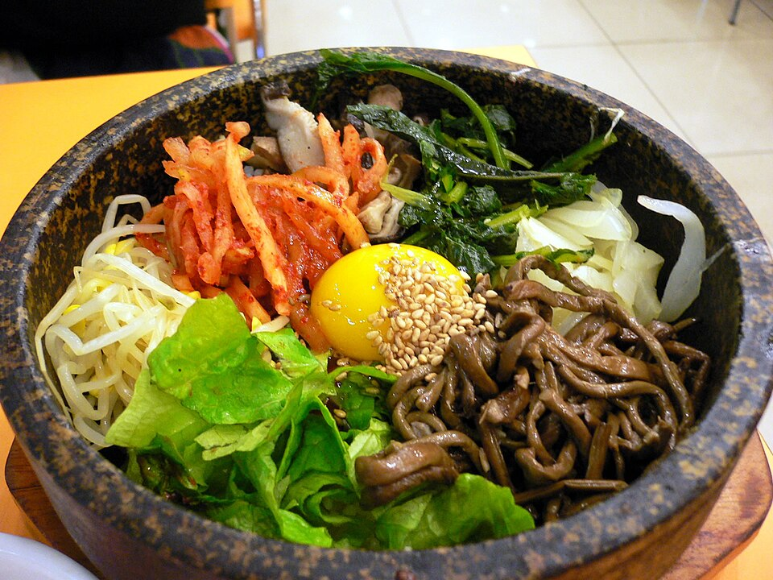
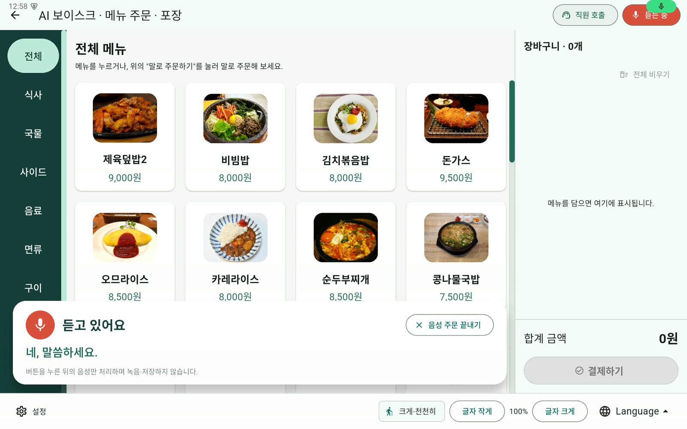
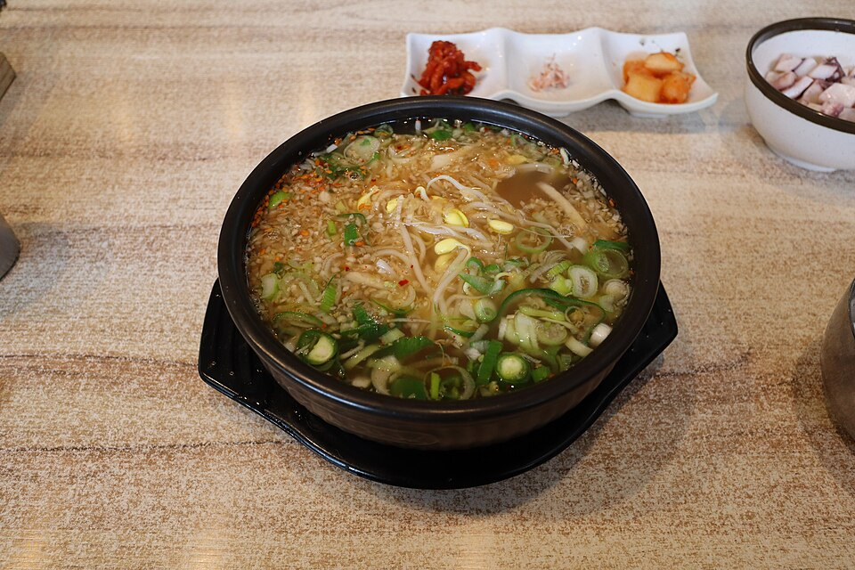
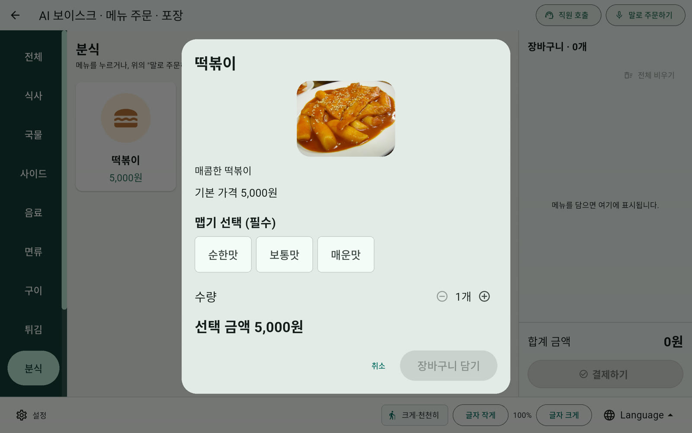
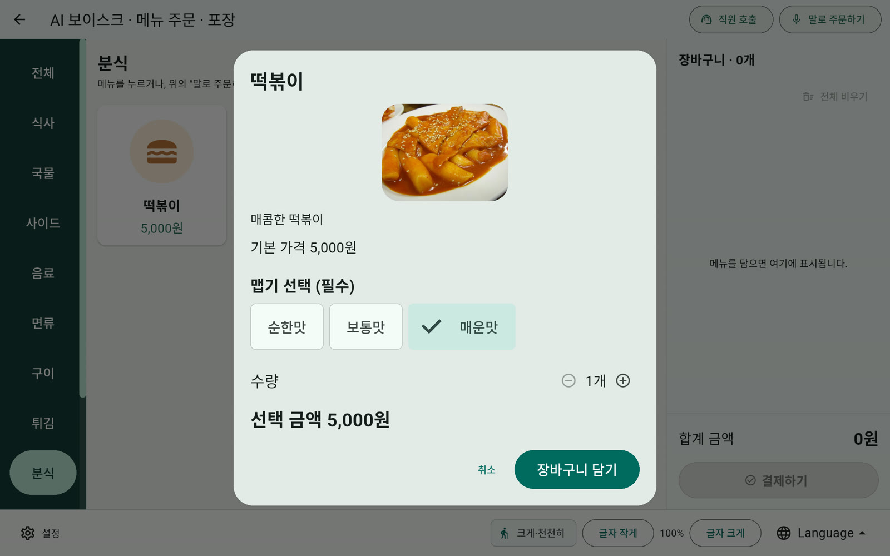
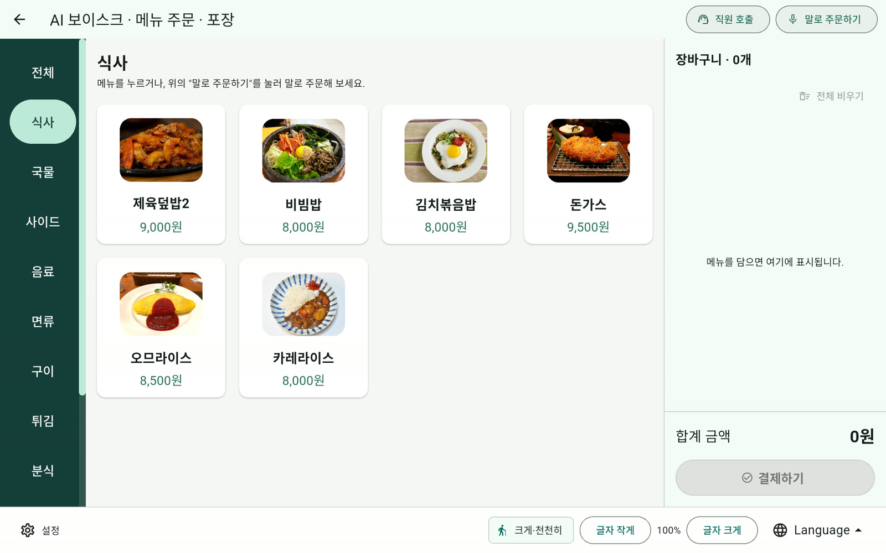

2026-2 캡스톤디자인
AI
보이스크
말로 주문하고, 상황에 맞는 메뉴를 추천받는 태블릿 AI 음성 키오스크
Team Mallo(말로)

키오스크 앞에서
주문이 멈추는 세 순간
- 1원하는 메뉴를 찾느라 탭을 반복합니다메뉴가 여러 화면에 흩어져 있습니다.
- 2뭘 먹을지 모를 때 물어볼 곳이 없습니다상황에 맞는 추천이 없습니다.
- 3터치가 어렵고, 뒷사람 눈치가 보입니다시니어·디지털 취약 고객은 주문을 포기하기도 합니다.
버튼을 누르고말하면
주문과 추천이 끝납니다
한 문장으로 주문
“제육 두 개랑 콜라 하나”
메뉴와 수량을 한 번에 알아듣고 장바구니에 담습니다.
상황만 말해도 추천
“해장할 만한 거”
매장 메뉴 중 맞는 3개를 이유와 함께 추천합니다.
점주는 웹에서 메뉴·사진·추천 정책을 관리합니다.
한 문장이면 장바구니까지

손님
“제육 두 개랑 콜라 하나”
키오스크
제육덮밥 2개와 콜라 1개 담을까요?
네장바구니
- 제육덮밥2개
 콜라1개
콜라1개
“어제 술을 많이 마셨는데
해장할 만한 거 추천해 줘”

이유 문장은 Claude Haiku가 메뉴 태그·설명에 근거해 만들고, 순위는 키오스크 추천 엔진이 정합니다.
손님
“떡볶이 하나”
키오스크
떡볶이 맵기를 골라 주세요.
순한맛, 보통맛, 매운맛이 있어요.


우리 서버로는 소리가 아니라
글자만 갑니다
키오스크 앱Flutter, 태블릿
음성 엔진 STT·TTSKotlin, 인식 결과를 글자로 받음
- 대화 상태 기계
- 추천 엔진
- 오프라인 메뉴 캐시
- 주문 Outbox
마이크는 ‘말로 주문하기’를 누른 동안만 켜집니다. 녹음하거나 저장하지 않습니다.
음성 인식은 안드로이드 내장 인식기(가능하면 오프라인 한국어 인식 팩)
FastAPI 서버
- 기기 토큰 인증
- 음성 해석
- WebSocket 동기화
- 주문 저장
- 노트북 LAN 서버
- 발화는 DB·로그에 남기지 않음
Claude Haiku
- 주문 해석, 상황 적합도와 이유
- 발화 저장 안 함
Azure MySQL
- 메뉴·주문·추천 로그, TLS
점주·관리자 웹
- React, 메뉴·옵션·사진
- 추천 정책, 통계, 기기 토큰
AI는 해석과
적합도만,
순위는 정해진
규칙으로
최종 점수
적합도 × w1
+ 이익 점수 × w2
+ 매장 우선 × w3
- 1
후보 거르기
품절 메뉴와 추천 제외 메뉴를 뺍니다.
- 2
적합도
Claude Haiku가 상황에 맞는 정도(0~100)와 이유를 냅니다.
AI는 이 단계만 맡습니다. - 3
기준선
기준에 못 미치는 메뉴는 이익이 커도 추천하지 않습니다.
- 4
점수·정렬
점주 정책 가중치로 합산해 상위 3개를 고릅니다.
정책을 이익 쪽으로 옮기면
원가율은 내려가고, 적합률은 그대로
추천 1순위 메뉴의 평균 원가율. 상황 질의 15개, 같은 Haiku 적합도 결과에 정책 슬라이더만 바꿔 적용.
합성 발화 67개로 재 봤습니다
100%
- 의도 분류목표 90%
- 품목·수량발화 41개
- 추천 적합률목표 85%, 질의 15개
4.06초
응답 시간 평균, 목표 2초에 못 미쳤습니다
구독 CLI를 거쳐 잰 값이라 CLI 실행 비용이 들어 있습니다. 실제 API 키 경로로 다시 잽니다.
한계합성 발화 기준입니다. 실제 태블릿 마이크 인식률과 시니어 사용자 테스트는 남은 과제입니다.
네트워크가 끊겨도, 가격이 바뀌어도
오프라인 우선
마지막으로 받은 메뉴로 터치 주문을 계속 받습니다. 주문은 기기 대기열(Outbox)에 쌓았다가 순서대로 보내고, 고유 ID로 다시 보내도 한 번만 저장됩니다.
실시간 메뉴 동기화
점주가 저장하면 WebSocket으로 알립니다. 진행 중인 주문은 시작한 메뉴로 끝내고, 결제 중 가격이 바뀌면 새 가격으로 다시 계산해 알려 줍니다.
프라이버시
마이크는 ‘말로 주문하기’를 누른 동안만 켜집니다. 녹음·저장하지 않고, 서버는 발화를 DB·로그에 남기지 않습니다.
다음 고객 준비
결제가 끝나거나 90초 동안 조작이 없으면 처음 화면으로 돌아가 장바구니와 대화를 비웁니다.
점주·회사
관리자 웹
저장하면 매장 태블릿에 바로 반영됩니다.

메뉴판
메뉴·옵션·필수 옵션 그룹·품절·노출 순서, 메뉴 사진 업로드
AI 추천
상황 태그·동의어·원가율, 추천 정책 프리셋 세 가지
음성 설정
음성 주문 사용, 안내 속도, 추가 제안, 기본 사용자 모드
통계
주문 수, 음성 주문 비율, 추천 선택률, 추천 경유 매출, 인기 메뉴
직원 호출
키오스크에서 부르면 점주 웹에 바로 알림
기기 관리
기기 토큰 발급, 연결 상태, 적용 메뉴 버전
음성과 터치는 같은 주문 명령을 거칩니다
Command
담기·빼기·수량·옵션을 명령 객체로 통일해, 터치와 음성이 같은 길로 장바구니를 바꿉니다.
State
대기 → 청취 → 이해 → 추천·되묻기·확인 → 실행 → 결제 안내
Pipeline
후보 거르기 → 적합도 → 기준선 → 점수 → 정렬
Outbox
주문을 기기에 먼저 저장하고 순서대로 보내 유실을 막습니다.
Repository
화면은 기기에 저장한 메뉴만 읽고, 동기화가 서버 변경을 반영합니다.
Facade
Kotlin 음성 엔진이 STT·TTS를 하나의 인터페이스로 묶습니다.
시연 너머, 실제 매장까지
2초
응답 시간
실제 API 키 경로에서 응답 시간을 다시 재고 2초 안으로 맞춥니다.
실기기 검증
갤럭시 탭 마이크로 음성 인식률을 확인하고, 3D 프린팅 케이스로 시연합니다.
사용자 테스트
시니어 주문 완료율 80% 목표. 터치 대비 탭 수·소요 시간을 비교합니다(앱에 측정 기록 내장).
배치
HTTPS와 서버 배포, 실제 결제 연동
감사합니다
AI 보이스크/Team Mallo(말로)
메뉴 사진: Wikimedia Commons 자유 라이선스(저작자·라이선스는 server/menu_image_credits.md). 키오스크 화면은 실제 앱을 에뮬레이터에서 촬영.